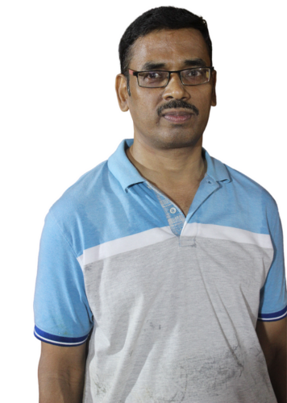
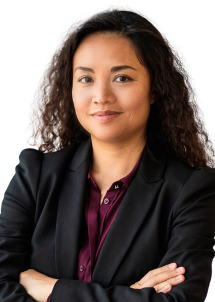
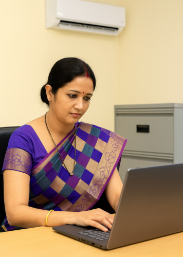
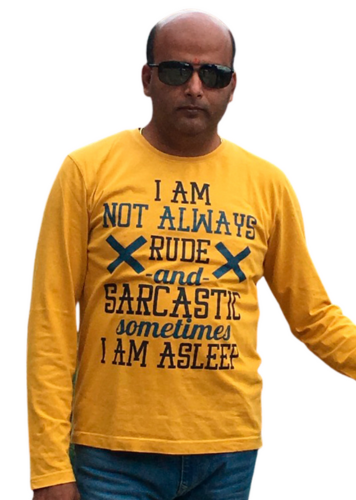
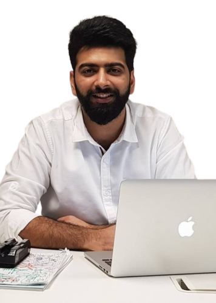

A customer-driven team dedicated to understanding your needs and delivering trusted solutions.





Gopinath .J
CEO/Founder
A sincere person with a straightforward vision, holding a B. Com and a Diploma in Multimedia and Web Masters. Being a first-generation entrepreneur is my greatest strength. Under my leadership, Gem Translators has achieved remarkable milestones over the past decade — expanding our language offerings from just 3 to 75, building a network of 1,000+ linguists, serving 300+ regular clients, and delivering over 10,000 projects.
Monica Jerald
BDM
My association with Gem Translators involves design and implement growth programs optimized to cultivate, generate, and close new business. I graduated in BBA from Ethiraj college for Women. My daily routine involves identifying new market opportunities, hunting for customers, generating leads, mining data in new exciting ways, managing partners, and creating revenue for the company and that's just in the morning.
S. Narmada
Accountant
Graduated from University of Madras in Commerce. Began my career in Gem Translators in 2023 as an Accounts Assistant and recently promoted as Accountant. My key responsibilities are invoicing and payment tracking, preparing financial statements and reports, ensuring tax and regulatory compliance, ensuring a healthy fund flow, budgeting, cost management and effective management of client and vendor relationships.
Ananthkumar .S
Art Director
A visualizer par excellence! A born perfectionist who is adept in transforming mediocre designs into outstanding and vibrant ones. I love creating minimalistic designs that speak louder than words. Heading a team of freelance graphic designers, DTP operators at Gem Translators to bring concepts, presentations, and prototypes to life.
Viswanathan .M
Project Manager
As a Project Manager, I coordinate between clients and linguistic teams, understand requirements, create project plans, shortlist and assign linguists based on expertise, and monitor progress effectively to ensure timelines and quality standards. I am a Postgraduate (M.Sc. - I.T.) from Sathyabama University. In the past 15 years I have worked with a couple of translation & localization companies and have successfully delivered 15000+ multilingual translation & localization projects of all sizes and complexity levels.